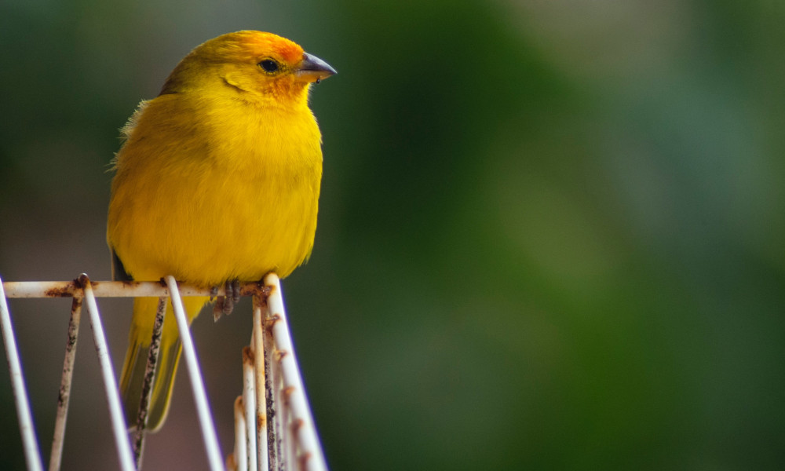
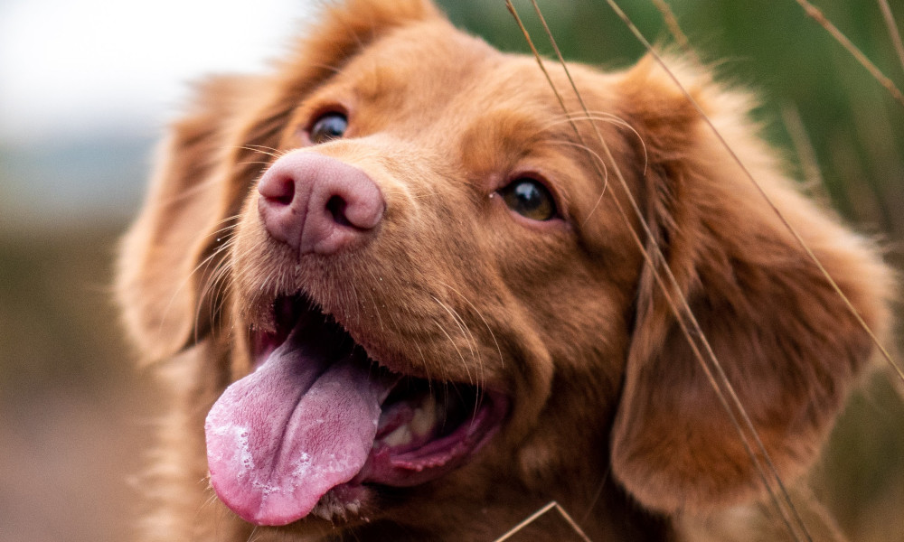
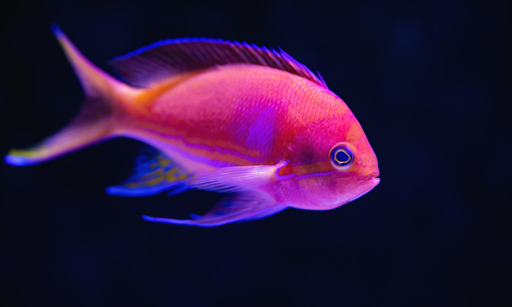

Animais domésticos
Os animais domésticos são aqueles que estão acostumados a viver com o ser humano. Esses animais agem assim como resultado de uma série de processos para domesticá-los. Alguns autores definem a domesticação como a adaptação do comportamento de uma espécie de modo a ajustá-la às necessidades do ser humano.